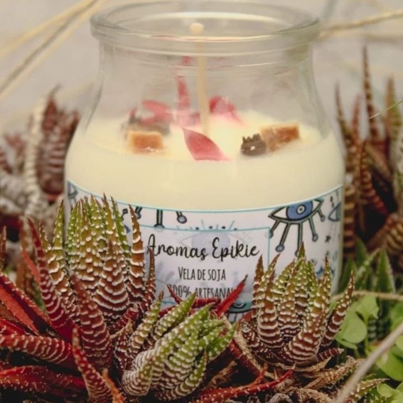

INICIO

PRODUCTOS DESTACADOS



QUIEN SOY
Hola! Mi nombre es Jimena y soy la persona detrás de Epike. Luego de 2 años donde quedamos frenados por la pandemia, muchos nos tuvimos que reinventar y aprender a subsistir. Asi cambiamos de rubro y nacieron nuestros atrapasueños y velas de soja aromaticas, todo repleto de amor. Los invito a volverse fan de los productos artesanales, porque es un camino hermoso y muy enriquecedor.